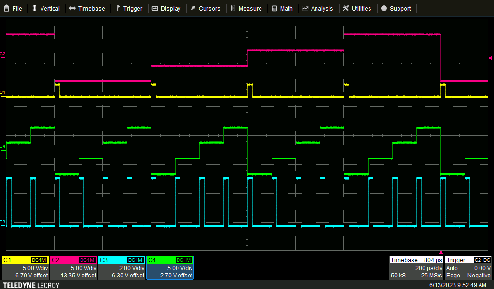
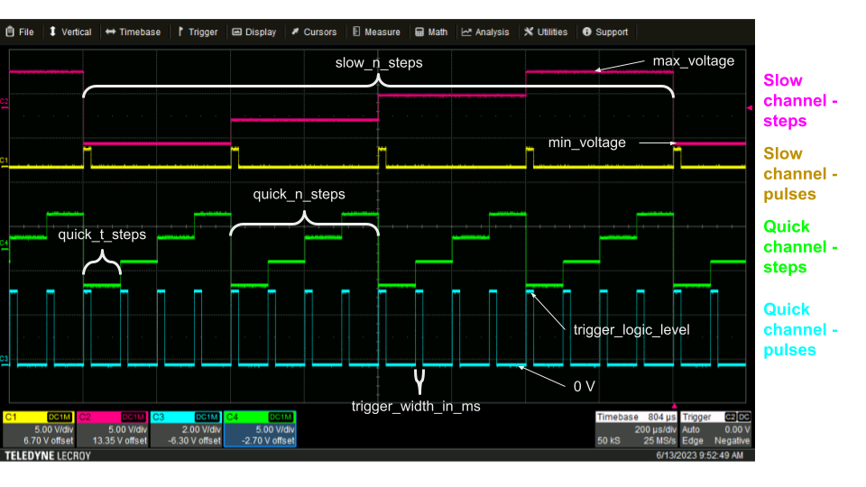
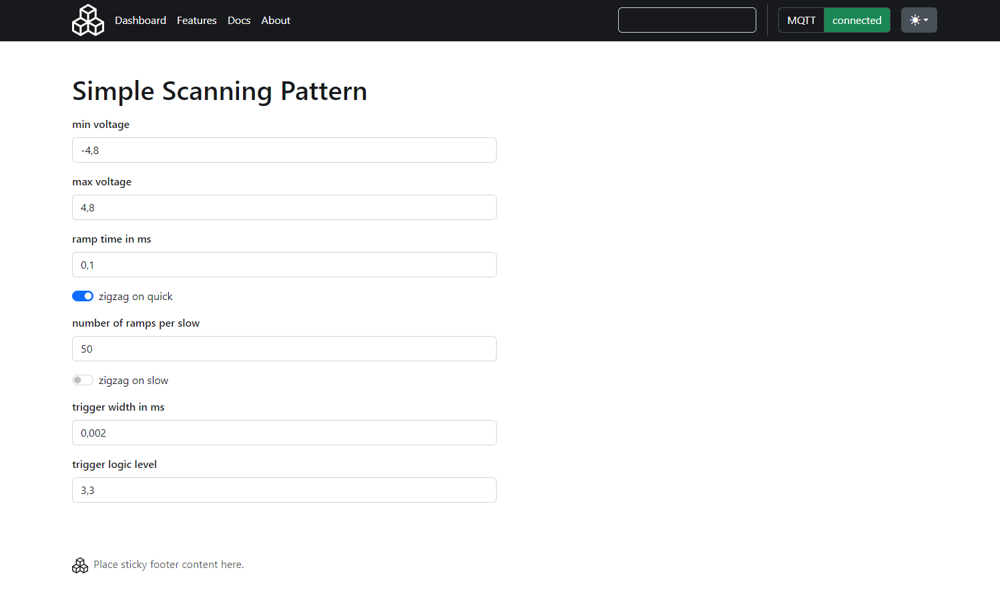

Simple scanning pattern
Output signal

Parameters
Note
This document is hand-made and not generated automatically to the firmware code. To be sure to have the up-to-date version , look at the WebUI or at the API documentation.
- min_voltage : minimum voltage (in V) - also voltage of lowest step. Applies to both quick and slow step channels.
- max_voltage : maximum voltage (in V) - also voltage of highest step. Applies to both quick and slow step channels.
- quick_n_steps : Total number of steps for one period on the quick channel.
- quick_t_steps : Width of one step, i.e. the time of a step (in ms).
- zigzag_on_quick : If true, makes a zigzag pattern on the quick channel.
- slow_n_steps : Total number of steps for one period ont he slow channel.
- zigzag_on_slow : If true, makes a zigzag pattern on the slow channel.
- trigger_width_in_ms : The width of the trigger pulse, in ms. Applies to both quick and slow pulse channels.
- trigger_logic_level : The logic high voltage level of the pulse. Applies to both quick and slow pulse channels.

MQTT message
Hello world
{
"name": "Name",
"device": "ASG",
"payload": {
"cmd": "load_simple_scanning_pattern",
"config": {
"min_voltage": -4.0,
"max_voltage": 4.0,
"quick_n_steps": 4,
"quick_t_steps": 0.1,
"zigzag_on_quick": false,
"slow_n_steps": 4,
"zigzag_on_slow": false,
"trigger_width_in_ms": 0.02,
"trigger_logic_level": 3.3
}
}
}Web interface
